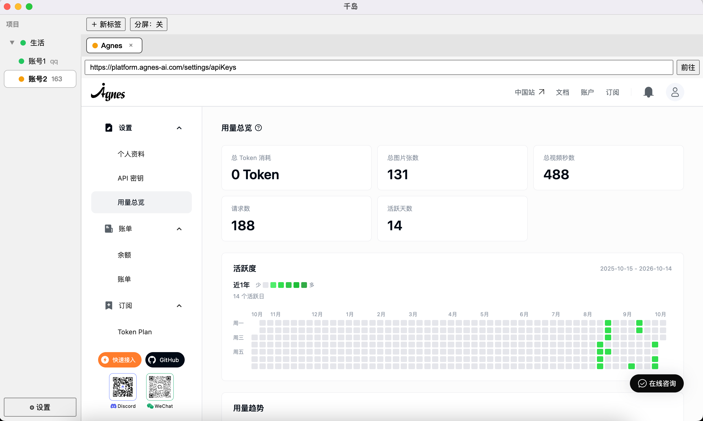
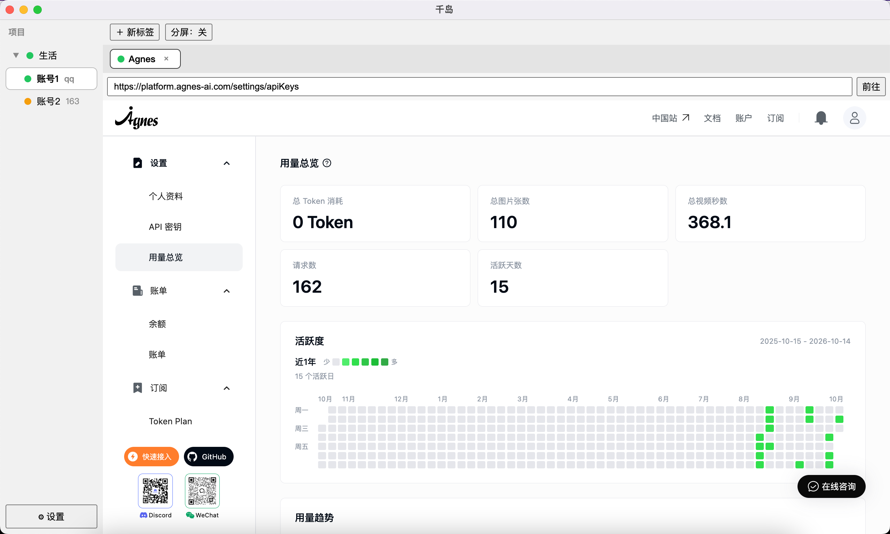

同一网站多登录身份同时在线、互不串号的桌面应用（Electron，macOS + Windows）。


项目是分组，实例是隔离的会话空间：一个实例登一个账号，同站多账号互不串号；标签页归属实例。
项目下挂多个实例，各自独立会话，同站多账号同时在线不串号。
地址栏跟随页面导航；Cmd+R 只重载当前标签；重启后标签懒加载恢复；分屏同实例并排看两页；站内新窗口进应用内弹窗或标签。
后退 / 前进 / 重新加载，链接新标签打开·复制链接，图片另存为·复制图片地址，复制选中文字。
顶栏下载按钮 + 失败红点；记录面板含进度条、失败重试（自动续序号不覆盖）、打开所在文件夹；失败 toast 即时提醒。
应用级默认 + 实例级覆盖，不可用时回退系统默认并通知。
地址栏 ☆ 收藏，在归属实例新标签打开；归属实例已删回退当前实例。
实例标注重复时常驻红点 + 系统通知提醒。
首启引导页讲清项目→实例→标签；设置页草稿制；Cmd+T/W、Cmd+Shift+[ / ]、Cmd+L、Cmd+R 开箱即用。
npm install 后 npm run dev。npm install
npm run dev每个实例独占持久化分区，删实例先清分区再删元数据。数据位置：macOS ~/Library/Application Support/multi-persona/，Windows %APPDATA%/multi-persona/。